Feed post (2)
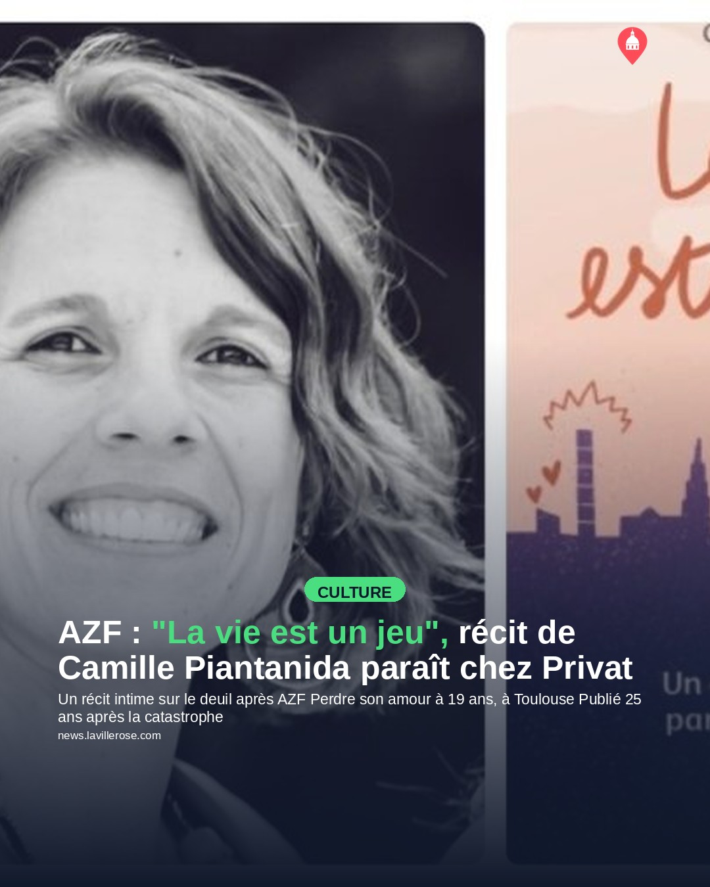
AZF : "La vie est un jeu", récit de Camille Piantanida paraît chez Privat
Texte sur l'image
Un récit intime sur le deuil après AZF
Perdre son amour à 19 ans, à Toulouse
Publié 25 ans après la catastrophe
Légende publiée
Il y a 25 ans, l'explosion de l'usine AZF dévastait Toulouse et des centaines de vies. Camille Piantanida, qui avait tout juste 19 ans ce 21 septembre 2001, a perdu son compagnon dans la catastrophe. Dans "La vie est un jeu", publié aujourd'hui aux éditions Privat, elle raconte ce deuil brutal, avec les mots griffonnés à chaud dans les heures qui ont suivi. Un témoignage rare, entre pudeur et lucidité, sur ce que signifie « ne pas saloper son deuil ». Pour tous ceux qui se souviennent où ils étaient ce jour-là — et ils sont nombreux à Toulouse.
Modifier sur GitHub →
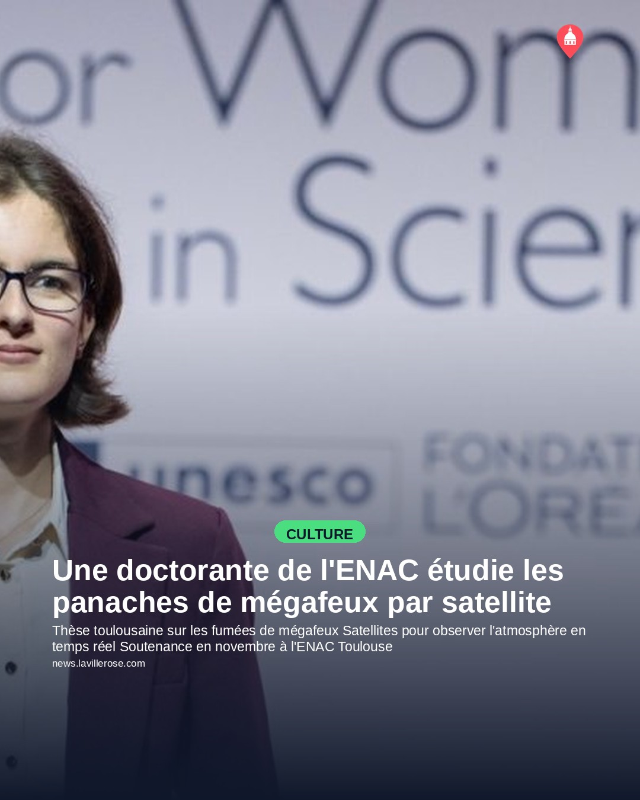
Une doctorante de l'ENAC étudie les panaches de mégafeux par satellite
Texte sur l'image
Thèse toulousaine sur les fumées de mégafeux
Satellites pour observer l'atmosphère en temps réel
Soutenance en novembre à l'ENAC Toulouse
Légende publiée
Et si les satellites pouvaient nous aider à mieux comprendre les mégafeux ? C'est le pari de Clémence Allietta, doctorante à l'ENAC de Toulouse, qui utilise la radio-occultation — une technique d'observation atmosphérique par ondes radio entre satellites — pour analyser les panaches de fumée de ces incendies géants. Formée à l'ENAC en télécommunications spatiales, elle a pivoté vers ce sujet après une rencontre avec une chercheuse du Cerfacs, le centre toulousain de modélisation climatique et environnementale. Elle soutient sa thèse en novembre, à un moment où la question des mégafeux n'a jamais été aussi brûlante.
Modifier sur GitHub →
Story (11)

Festival Sign'Ô : la création en Langue des Signes à Toulouse
Modifier sur GitHub →

La Semaine Seniors et + place du Capitole : bien-être et animations gratuites
Modifier sur GitHub →

Ilyun Bürkev en récital au Cloître des Jacobins pour Piano aux Jacobins
Modifier sur GitHub →

Tioma en concert au Bijou le 10 septembre
Modifier sur GitHub →

Spectacle théâtral sur l'amour et les liens humains au Pont Neuf
Modifier sur GitHub →

« 10 ans après » : une comédie pétillante à la Comédie de la Roseraie
Modifier sur GitHub →
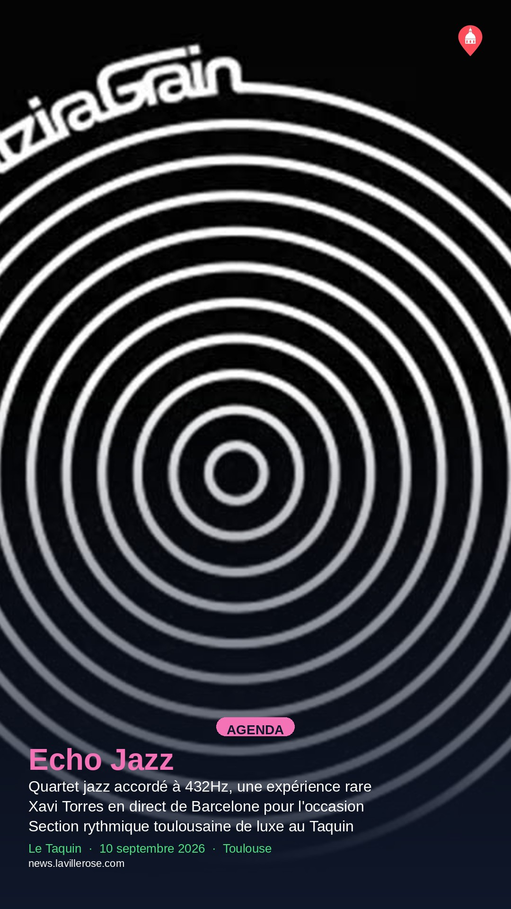
Echo Jazz : un quartet accordé à 432Hz au Taquin
Modifier sur GitHub →
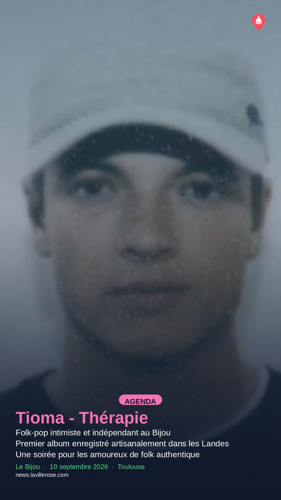
Tioma en concert folk-pop au Bijou pour son album Thérapie
Modifier sur GitHub →
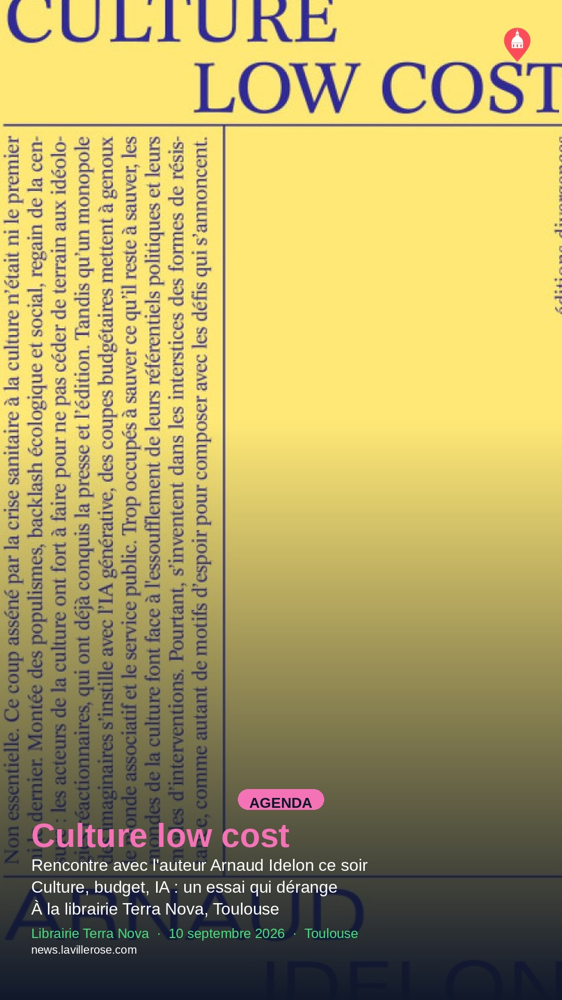
Présentation de « Culture Low Cost » à la librairie Terra Nova
Modifier sur GitHub →
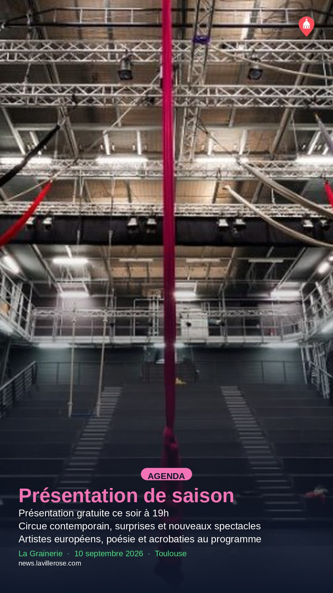
Présentation de la saison circassienne à La Grainerie
Modifier sur GitHub →
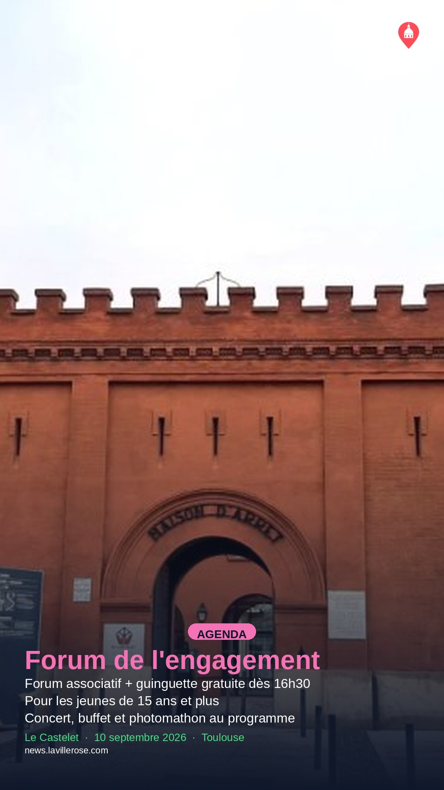
Forum de l'engagement et guinguette gratuite au Castelet
Modifier sur GitHub →
À venir (48)
Événements déjà en base qui redeviendront éligibles à une Story sur une date future,
d'après leur planning actuel. Projection, pas une garantie : elle suppose qu'aucun
nouvel article n'arrive et que rien d'autre n'est publié entre-temps.
2026-09-11

Festival Sign'Ô : la création en Langue des Signes à Toulouse
jusqu'au 13 septembre 2026
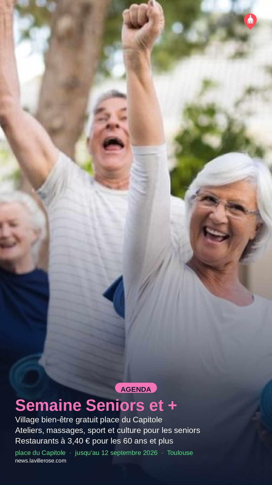
La Semaine Seniors et + place du Capitole : bien-être et animations gratuites
jusqu'au 12 septembre 2026
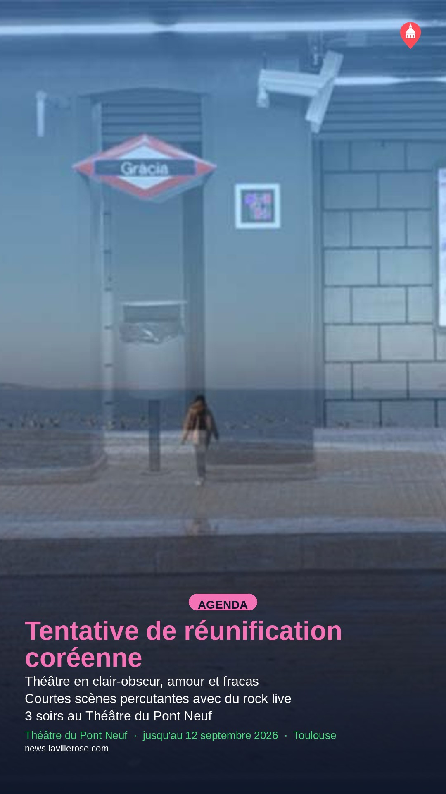
Spectacle théâtral sur l'amour et les liens humains au Pont Neuf
jusqu'au 12 septembre 2026

Comédie « Les Clotildes » au Café Théâtre Les 3T
11 septembre 2026

Vadim Kholodenko au Cloître des Jacobins : Beethoven et Liszt
11 septembre 2026
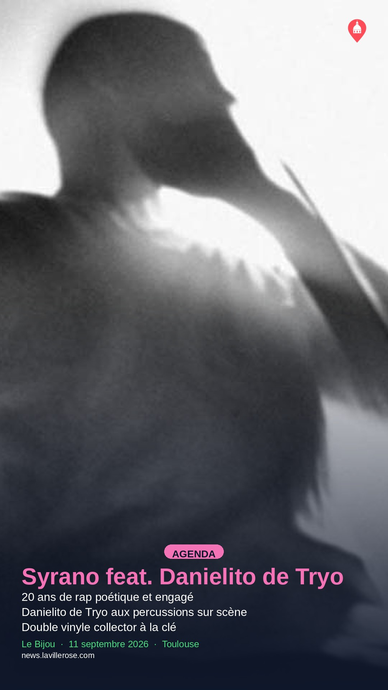
Syrano fête 20 ans de carrière au Bijou avec Danielito de Tryo
11 septembre 2026

Spectacle féministe bilingue au Théâtre Sorano en septembre
11 septembre 2026
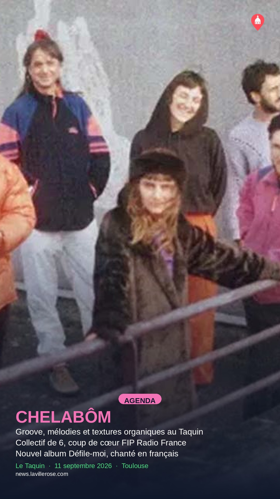
CHELABÔM en concert au Taquin le 11 septembre
11 septembre 2026

Bruno Aguiar en spectacle : « Vacances de Rêve » au Café Théâtre Les 3T
11 septembre 2026
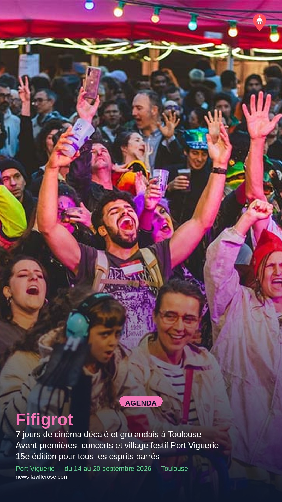
Fifigrot : le festival du film grolandais de retour en septembre
du 14 au 20 septembre 2026
2026-09-12
Festival Sign'Ô : la création en Langue des Signes à Toulouse
jusqu'au 13 septembre 2026
La Semaine Seniors et + place du Capitole : bien-être et animations gratuites
jusqu'au 12 septembre 2026
Spectacle théâtral sur l'amour et les liens humains au Pont Neuf
jusqu'au 12 septembre 2026

Deux événements de triathlon à Toulouse en septembre et octobre
12 septembre 2026

Visite guidée : l'art du vitrail à travers Toulouse
12 septembre 2026

Parcours insolite : des ornements Virebent à la Maison Giscard
12 septembre 2026

Mon Petit Chaperon : spectacle jeunesse à la Comédie de la Roseraie
du 12 au 13 septembre 2026

Les Fils de ta Mère en cabaret improvisé au Bijou
12 septembre 2026

Les Mélodies du Canal aux Cales de Radoub : concerts solidaires sur l'eau
du 12 au 13 septembre 2026

Deli Zirzop en concert au Taquin le 12 septembre
12 septembre 2026

Grain de Quartier fête sa rentrée avec un week-end éthiopien à Saint-Cyprien
du 12 au 13 septembre 2026

Les Murmures de la Terre au Théâtre de la Violette
du 12 au 13 septembre 2026
Fifigrot : le festival du film grolandais de retour en septembre
du 14 au 20 septembre 2026
2026-09-13
Festival Sign'Ô : la création en Langue des Signes à Toulouse
jusqu'au 13 septembre 2026
Mon Petit Chaperon : spectacle jeunesse à la Comédie de la Roseraie
du 12 au 13 septembre 2026
Les Mélodies du Canal aux Cales de Radoub : concerts solidaires sur l'eau
du 12 au 13 septembre 2026
Grain de Quartier fête sa rentrée avec un week-end éthiopien à Saint-Cyprien
du 12 au 13 septembre 2026
Les Murmures de la Terre au Théâtre de la Violette
du 12 au 13 septembre 2026

Visite inclusive et sensorielle de Toulouse pour tous les publics
13 septembre 2026

Visite guidée du quartier Marengo, laboratoire urbain du XIXe siècle
13 septembre 2026

Hommage à Weber sur instruments historiques à la Chapelle des Carmélites
13 septembre 2026

Canoë avec une kayakiste olympique puis brunch sur une péniche
13 septembre 2026
Fifigrot : le festival du film grolandais de retour en septembre
du 14 au 20 septembre 2026
2026-09-14
Fifigrot : le festival du film grolandais de retour en septembre
du 14 au 20 septembre 2026
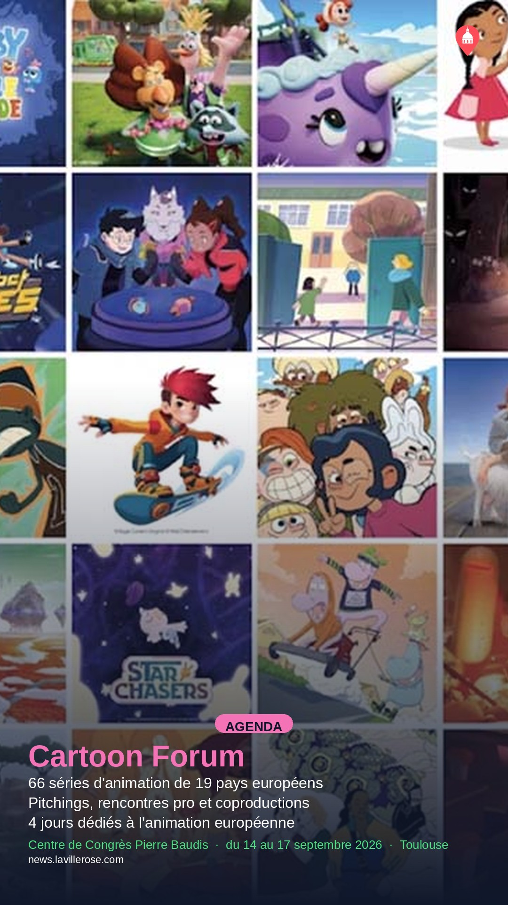
Cartoon Forum 2026 : 66 séries d'animation européennes à Toulouse
du 14 au 17 septembre 2026

Paul Lay en concert au Cloître des Jacobins
14 septembre 2026
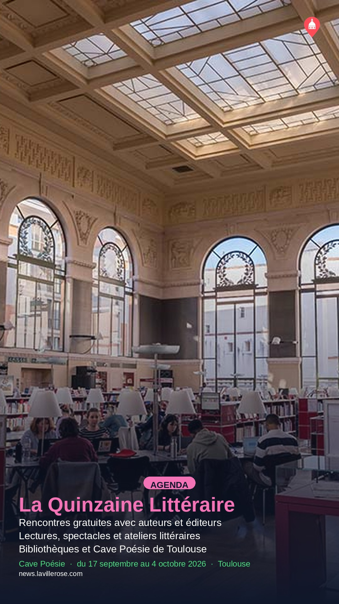
La Quinzaine Littéraire : rencontres gratuites dans les bibliothèques toulousaines
du 17 septembre au 4 octobre 2026

Exposition sur le Canal du Midi à la Galerie 24 de l'ENSA
du 17 septembre au 11 decembre 2026
2026-09-15
Cartoon Forum 2026 : 66 séries d'animation européennes à Toulouse
du 14 au 17 septembre 2026

Pierre Laurent Aimard interprète Bach et Kurtág au Cloître des Jacobins
15 septembre 2026
2026-09-16
Cartoon Forum 2026 : 66 séries d'animation européennes à Toulouse
du 14 au 17 septembre 2026

Balade naturaliste le long du canal à Rangueil
16 septembre 2026

TABANAR en concert au Taquin le 16 septembre
16 septembre 2026
2026-09-17
Cartoon Forum 2026 : 66 séries d'animation européennes à Toulouse
du 14 au 17 septembre 2026
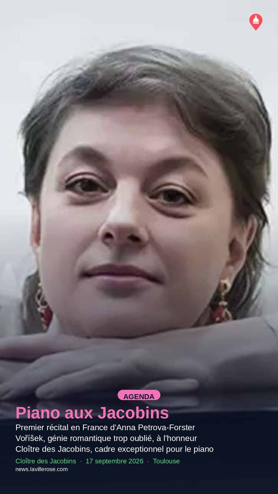
Anna Petrova-Forster joue Voříšek et Schubert au Cloître des Jacobins
17 septembre 2026

Le Loto Rigolo du Studio 55 : rires et cadeaux au programme
17 septembre 2026

Hommage à Grant Green au Taquin, le 17 septembre
17 septembre 2026

Yuri Buenaventura en concert à Saint-Orens-de-Gameville
17 septembre 2026